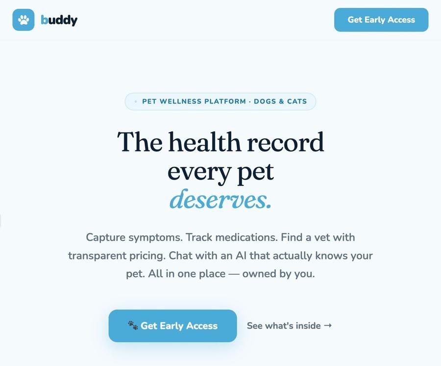
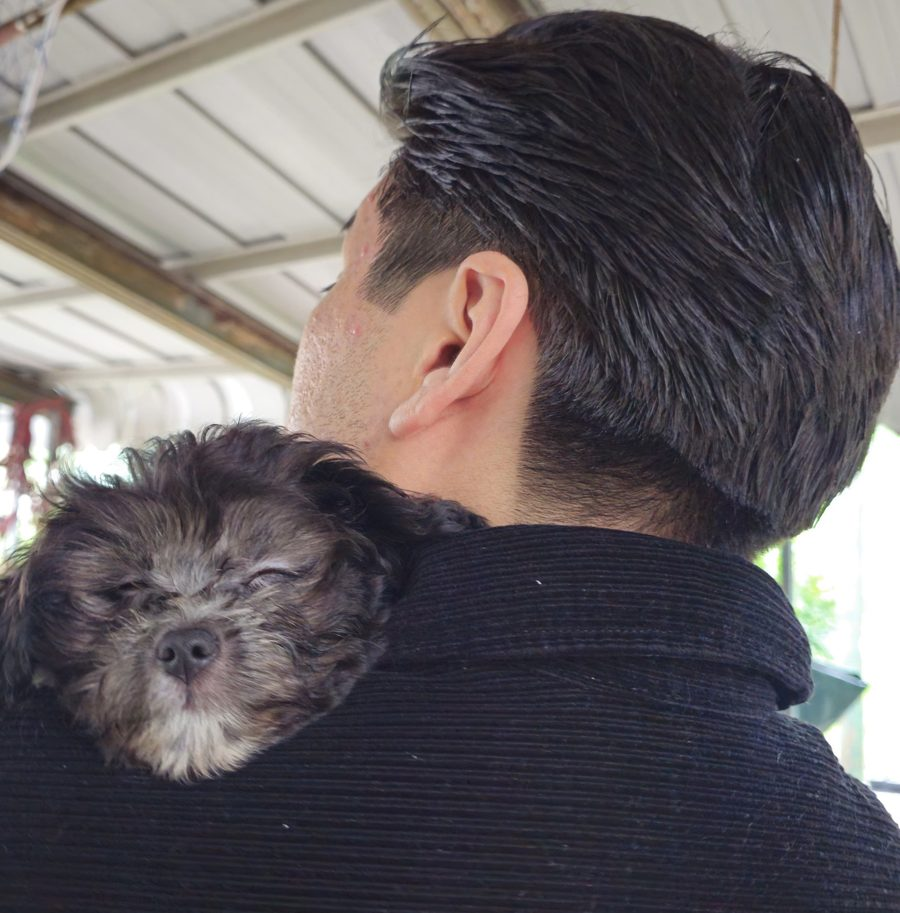
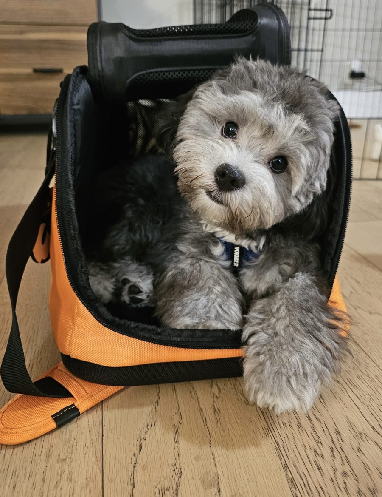

A pet care hub for tracking medical history, medications, and appointments, with transparent vet pricing and an AI that actually knows your pet. I built it for my own dog.
Medical history, medications, and appointments in one place.
Clear vet pricing so owners are not left guessing.
Context aware help built around each animal, not generic advice.



This is who it is for. His records, medications, and vet visits were scattered across texts and paper, so I built the hub I wished existed.
I built Buddy for my own dog. Keeping track of his records, medications, and vet visits was scattered across texts and paper, so I built the hub I wished existed. Because it is for him, the small details are the ones I care about most.
I sell for a living and build the systems that make selling faster. If that mix is useful to your team, I would love to talk.
Get in touch